CODING AGENTS AS PIXEL WORLD MODELS
traex/DeepSeek-V4.1-Flash · 0118
点击播放 · 原生 RGB 像素
逐轮保存的候选
回放视频、检查图与代码变化。
每份候选均可单独播放。实际图片检查记录在下方工具轨迹中。
候选 01播放与检查图
点击播放 · 原生 RGB 像素

展开代码变化
--- 上一保存版本
+++ 本次保存版本
@@ -0,0 +1,203 @@
+from pathlib import Path
+
+import cv2
+import numpy as np
+
+import artifact_io
+
+
+ROOT = Path(__file__).resolve().parent
+FRAMES = 20
+FPS = 4
+WIDTH = 256
+HEIGHT = 144
+
+
+def bilinear(image, x, y):
+ """Sample an RGB float image at pixel-center coordinates."""
+ map_x = x.astype(np.float32)[None, :]
+ map_y = y.astype(np.float32)[None, :]
+ return cv2.remap(
+ image,
+ map_x,
+ map_y,
+ interpolation=cv2.INTER_LINEAR,
+ borderMode=cv2.BORDER_REPLICATE,
+ )[0]
+
+
+def rotate_y(vector, angle):
+ """Clockwise rotation viewed from above (positive image x is right)."""
+ x, y, z = vector
+ c, s = np.cos(angle), np.sin(angle)
+ return np.array([x * c + z * s, y, -x * s + z * c], dtype=np.float32)
+
+
+def tennis_back(theta, phi):
+ """Procedural green tennis-cloth texture for the initially hidden side."""
+ shape = theta.shape
+ fine = (
+ 0.050 * np.sin(31.0 * theta + 17.0 * phi)
+ + 0.035 * np.sin(47.0 * phi - 13.0 * theta + 0.7)
+ + 0.025 * np.cos(73.0 * theta + 29.0 * phi)
+ )
+ broad = 0.045 * np.sin(4.0 * theta + 1.8 * np.sin(5.0 * phi))
+ fuzz = np.clip(1.0 + fine + broad, 0.78, 1.16)
+
+ base = np.stack(
+ [
+ 151.0 * fuzz,
+ 158.0 * fuzz,
+ 47.0 * fuzz,
+ ],
+ axis=-1,
+ )
+
+ # Two gently wandering side seams, kept subtle at this image scale.
+ seam_1 = np.abs(theta - (1.16 + 0.13 * np.sin(2.0 * phi + 0.5)))
+ seam_2 = np.abs(theta + (1.16 + 0.13 * np.sin(2.0 * phi - 0.5)))
+ seam = np.minimum(seam_1, seam_2)
+ seam_strength = np.clip((0.075 - seam) / 0.075, 0.0, 1.0) * 0.30
+ base *= (1.0 - seam_strength[..., None])
+
+ # Small pale fibers catch light along the seam.
+ fiber = np.clip(1.0 - np.abs(seam - 0.095) / 0.025, 0.0, 1.0)
+ fiber *= np.clip(0.5 + 0.5 * np.sin(23.0 * phi + 8.0 * theta), 0.0, 1.0)
+ base += fiber[..., None] * np.array([19.0, 20.0, 8.0])
+ return base.reshape(*shape, 3) if len(shape) else base
+
+
+def render_sphere(
+ source,
+ center,
+ radii,
+ rotation,
+ view_azimuth=0.0,
+ mirror=False,
+):
+ """Render a textured sphere at native frame resolution."""
+ image = source.astype(np.float32)
+ cx, cy = center
+ rx, ry = radii
+ x0 = max(0, int(np.floor(cx - rx - 2)))
+ x1 = min(WIDTH, int(np.ceil(cx + rx + 2)))
+ y0 = max(0, int(np.floor(cy - ry - 2)))
+ y1 = min(HEIGHT, int(np.ceil(cy + ry + 2)))
+
+ yy, xx = np.mgrid[y0:y1, x0:x1]
+ nx = (xx - cx) / rx
+ ny = (yy - cy) / ry
+ radial = nx * nx + ny * ny
+ inside = radial < 1.0
+ nz = np.sqrt(np.clip(1.0 - radial, 0.0, 1.0))
+
+ # Convert the reflected camera's local normal into world coordinates.
+ cv, sv = np.cos(view_azimuth), np.sin(view_azimuth)
+ wx = nx * cv + nz * sv
+ wy = ny
+ wz = -nx * sv + nz * cv
+
+ # Inverse object rotation gives the texture direction.
+ ca, sa = np.cos(rotation), np.sin(rotation)
+ tx = wx * ca - wz * sa
+ ty = wy
+ tz = wx * sa + wz * ca
+ tz = np.clip(tz, -1.0, 1.0)
+
+ theta = np.arctan2(tx, np.maximum(tz, 1e-5))
+ phi = np.arcsin(np.clip(ty, -1.0, 1.0))
+
+ # The photographed smiley hemisphere is the front albedo source.
+ front = tz > 0.0
+ source_x = cx + rx * tx
+ source_y = cy + ry * ty
+ source_rgb = bilinear(image, source_x[inside], source_y[inside])
+
+ light = np.array([-0.42, -0.56, 0.71], dtype=np.float32)
+ light /= np.linalg.norm(light)
+ source_vectors = np.stack(
+ [tx[inside], ty[inside], np.maximum(tz[inside], 0.0)], axis=-1
+ )
+ current_vectors = np.stack(
+ [nx[inside], ny[inside], nz[inside]], axis=-1
+ )
+ source_light = 0.58 + 0.42 * np.clip(source_vectors @ light, 0.0, 1.0)
+ current_light = 0.58 + 0.42 * np.clip(current_vectors @ light, 0.0, 1.0)
+
+ albedo = source_rgb / source_light[:, None]
+ rendered = albedo * current_light[:, None]
+
+ synthetic = tennis_back(theta[inside], phi[inside])
+ synthetic_light = current_light[:, None]
+ synthetic = synthetic * synthetic_light
+
+ # Feather the photographed front into generated cloth at the side.
+ blend = np.clip((np.abs(theta[inside]) - 1.30) / 0.28, 0.0, 1.0)
+ use_generated = (~front[inside]).astype(np.float32)
+ blend = np.maximum(blend, use_generated)
+ rgb = rendered * (1.0 - blend[:, None]) + synthetic * blend[:, None]
+
+ if mirror:
+ # Dimmer, cooler, and slightly veiled by the mirror glass.
+ rgb = rgb * np.array([0.73, 0.74, 0.70]) + np.array([3.0, 4.0, 5.0])
+
+ # One-pixel coverage feather. The photographed object occupies the same
+ # footprint, so partial edge coverage blends naturally with the plate.
+ distance = np.sqrt((xx - cx) ** 2 + (yy - cy) ** 2)
+ alpha = np.clip(rx + 0.55 - distance, 0.0, 1.0)
+ alpha[~inside] = 0.0
+
+ out = image.copy()
+ patch = out[y0:y1, x0:x1]
+ patch_flat = patch.reshape(-1, 3)
+ a = alpha[inside].reshape(-1, 1)
+ rgb = np.clip(rgb, 0.0, 255.0)
+ composed = patch_flat.copy()
+ composed[inside.reshape(-1)] = (
+ rgb * a + patch_flat[inside.reshape(-1)] * (1.0 - a)
+ )
+ patch_flat[:] = composed
+ return np.clip(np.rint(out), 0, 255).astype(np.uint8)
+
+
+def main():
+ first = cv2.imread(str(ROOT / "first_frame.png"), cv2.IMREAD_COLOR)
+ if first is None:
+ raise FileNotFoundError(ROOT / "first_frame.png")
+ first = cv2.cvtColor(first, cv2.COLOR_BGR2RGB)
+ if first.shape != (HEIGHT, WIDTH, 3):
+ raise ValueError(f"Unexpected first frame shape: {first.shape}")
+
+ # Constant, slow clockwise angular velocity: a little over one third turn.
+ total_rotation = np.deg2rad(132.0)
+ frames = []
+ for index in range(FRAMES):
+ if index == 0:
+ frames.append(first.copy())
+ continue
+
+ rotation = total_rotation * index / (FRAMES - 1)
+ frame = render_sphere(
+ first,
+ center=(158.5, 84.0),
+ radii=(10.25, 10.25),
+ rotation=rotation,
+ view_azimuth=0.0,
+ mirror=False,
+ )
+ frame = render_sphere(
+ frame,
+ center=(219.0, 63.1),
+ radii=(7.10, 6.45),
+ rotation=rotation,
+ view_azimuth=np.deg2rad(118.0),
+ mirror=True,
+ )
+ frames.append(frame)
+
+ frames = np.stack(frames)
+ artifact_io.save(frames, ROOT)
+
+
+if __name__ == "__main__":
+ main()
候选 02播放与检查图
点击播放 · 原生 RGB 像素

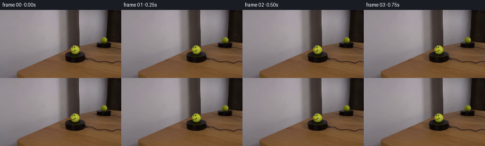
展开代码变化
--- 上一保存版本
+++ 本次保存版本
@@ -152,11 +152,9 @@
patch_flat = patch.reshape(-1, 3)
a = alpha[inside].reshape(-1, 1)
rgb = np.clip(rgb, 0.0, 255.0)
- composed = patch_flat.copy()
- composed[inside.reshape(-1)] = (
+ patch[inside] = (
rgb * a + patch_flat[inside.reshape(-1)] * (1.0 - a)
)
- patch_flat[:] = composed
return np.clip(np.rint(out), 0, 255).astype(np.uint8)
候选 03播放与检查图
候选 04播放与检查图
点击播放 · 原生 RGB 像素
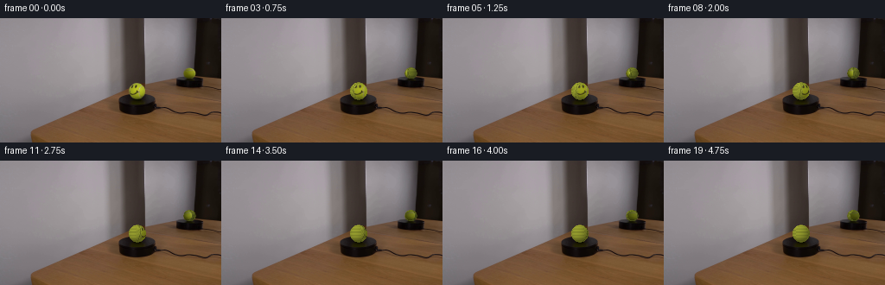
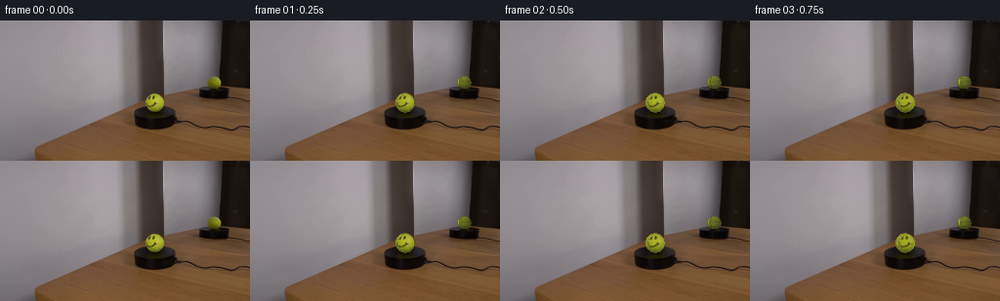
展开代码变化
--- 上一保存版本
+++ 本次保存版本
@@ -107,8 +107,9 @@
theta = np.arctan2(tx, np.maximum(tz, 1e-5))
phi = np.arcsin(np.clip(ty, -1.0, 1.0))
- # The photographed smiley hemisphere is the front albedo source.
- front = tz > 0.0
+ # The photographed smiley occupies only the initial camera-facing surface.
+ # As it turns away, expose continuous cloth rather than stretching its edge.
+ front = tz > np.cos(np.deg2rad(56.0))
source_x = cx + rx * tx
source_y = cy + ry * ty
source_rgb = bilinear(image, source_x[inside], source_y[inside])
@@ -131,8 +132,10 @@
synthetic_light = current_light[:, None]
synthetic = synthetic * synthetic_light
- # Feather the photographed front into generated cloth at the side.
- blend = np.clip((np.abs(theta[inside]) - 1.30) / 0.28, 0.0, 1.0)
+ # Feather the photographed face into generated cloth before its silhouette.
+ blend = np.clip(
+ (np.cos(np.deg2rad(56.0)) - tz[inside]) / 0.20, 0.0, 1.0
+ )
use_generated = (~front[inside]).astype(np.float32)
blend = np.maximum(blend, use_generated)
rgb = rendered * (1.0 - blend[:, None]) + synthetic * blend[:, None]
@@ -167,7 +170,7 @@
raise ValueError(f"Unexpected first frame shape: {first.shape}")
# Constant, slow clockwise angular velocity: a little over one third turn.
- total_rotation = np.deg2rad(132.0)
+ total_rotation = np.deg2rad(142.0)
frames = []
for index in range(FRAMES):
if index == 0:
候选 05播放与检查图
点击播放 · 原生 RGB 像素
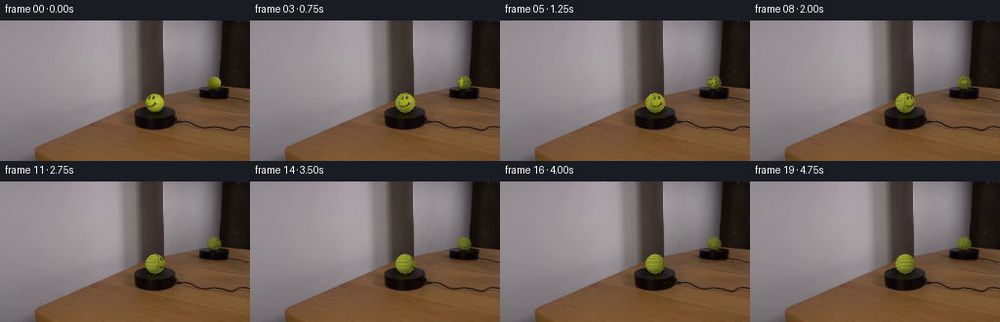
展开代码变化
--- 上一保存版本
+++ 本次保存版本
@@ -74,11 +74,15 @@
rotation,
view_azimuth=0.0,
mirror=False,
+ source_center=None,
+ source_radii=None,
):
"""Render a textured sphere at native frame resolution."""
image = source.astype(np.float32)
cx, cy = center
rx, ry = radii
+ scx, scy = source_center if source_center is not None else center
+ srx, sry = source_radii if source_radii is not None else radii
x0 = max(0, int(np.floor(cx - rx - 2)))
x1 = min(WIDTH, int(np.ceil(cx + rx + 2)))
y0 = max(0, int(np.floor(cy - ry - 2)))
@@ -110,8 +114,8 @@
# The photographed smiley occupies only the initial camera-facing surface.
# As it turns away, expose continuous cloth rather than stretching its edge.
front = tz > np.cos(np.deg2rad(56.0))
- source_x = cx + rx * tx
- source_y = cy + ry * ty
+ source_x = scx + srx * tx
+ source_y = scy + sry * ty
source_rgb = bilinear(image, source_x[inside], source_y[inside])
light = np.array([-0.42, -0.56, 0.71], dtype=np.float32)
@@ -191,8 +195,10 @@
center=(219.0, 63.1),
radii=(7.10, 6.45),
rotation=rotation,
- view_azimuth=np.deg2rad(118.0),
+ view_azimuth=np.deg2rad(90.0),
mirror=True,
+ source_center=(158.5, 84.0),
+ source_radii=(10.25, 10.25),
)
frames.append(frame)
候选 06播放与检查图
点击播放 · 原生 RGB 像素

展开代码变化
--- 上一保存版本
+++ 本次保存版本
@@ -65,6 +65,38 @@
fiber *= np.clip(0.5 + 0.5 * np.sin(23.0 * phi + 8.0 * theta), 0.0, 1.0)
base += fiber[..., None] * np.array([19.0, 20.0, 8.0])
return base.reshape(*shape, 3) if len(shape) else base
+
+
+def apply_face_decals(rgb, theta, phi):
+ """Add a compact painted face at the photographed smiley's orientation."""
+ pixels = rgb.reshape(-1, 3)
+ theta = theta.reshape(-1)
+ phi = phi.reshape(-1)
+
+ def stroke(distance, width):
+ return np.clip((width - distance) / 0.22, 0.0, 1.0)
+
+ eye_radius = np.sqrt(
+ ((theta - 0.25) / 0.135) ** 2 + ((phi + 0.055) / 0.15) ** 2
+ )
+ right_eye_radius = np.sqrt(
+ ((theta + 0.10) / 0.135) ** 2 + ((phi + 0.055) / 0.15) ** 2
+ )
+ eyes = np.maximum(
+ stroke(eye_radius, 1.0), stroke(right_eye_radius, 1.0)
+ )
+
+ smile_distance = np.abs(
+ phi - (-0.20 + 0.64 * (theta + 0.05) ** 2)
+ )
+ smile = stroke(smile_distance, 0.075)
+ smile *= (theta > -0.72) & (theta < 0.72)
+ smile *= phi < -0.05
+
+ paint = np.maximum(eyes, smile) * 0.82
+ paint_rgb = np.array([39.0, 37.0, 31.0])
+ pixels[:] = pixels * (1.0 - paint[:, None]) + paint_rgb * paint[:, None]
+ return pixels.reshape(rgb.shape)
def render_sphere(
@@ -133,6 +165,10 @@
rendered = albedo * current_light[:, None]
synthetic = tennis_back(theta[inside], phi[inside])
+ if mirror:
+ synthetic = apply_face_decals(
+ synthetic, theta[inside], phi[inside]
+ )
synthetic_light = current_light[:, None]
synthetic = synthetic * synthetic_light
可观测工具轨迹
实际执行的命令与返回图片。
命令 1exit 0
/bin/bash -c "pwd && rg --files -g 'prompt.txt' -g 'GENERATION_RULES.md' -g '*.md' -g '*.png' -g '*.jpg' -g '*.mp4' -g '*.webm'"
命令 2exit 0
/bin/bash -c 'git status --short'
命令 3exit 0
/bin/bash -c 'cat prompt.txt'
命令 4exit 0
/bin/bash -c 'cat GENERATION_RULES.md'
命令 5exit 1
/bin/bash -c 'file first_frame.png && identify first_frame.png 2>/dev/null || true && command -v ffmpeg && ffmpeg -version | head -n 3'
命令 6exit 0
/bin/bash -c 'ls -la'
命令 7exit 0
/bin/bash -c "find . -maxdepth 3 -type f -not -path './.git/*' -printf '%p\\n' | sort"
命令 8exit 0
/bin/bash -c "python - <<'PY'
import importlib.util
for name in ['artifact_io','numpy','PIL','cv2','scipy','skimage','imageio']:
spec=importlib.util.find_spec(name)
print(name, spec.origin if spec else None)
PY"命令 9exit 0
/bin/bash -c "sed -n '1,240p' artifact_io.py"
命令 10exit 0
/bin/bash -c "python - <<'PY'
from PIL import Image
im=Image.open('first_frame.png')
im.crop((95,35,245,115)).resize((900,480),Image.Resampling.NEAREST).save('.tmp/scene_crop.png')
im.crop((135,62,182,110)).resize((470,480),Image.Resampling.NEAREST).save('.tmp/front_ball_crop.png')
im.crop((200,40,240,82)).resize((400,420),Image.Resampling.NEAREST).save('.tmp/reflection_crop.png')
print(im.size)
PY"命令 11exit 0
/bin/bash -c "python - <<'PY'
import cv2, numpy as np
im=cv2.imread('first_frame.png')
hsv=cv2.cvtColor(im,cv2.COLOR_BGR2HSV)
# broad yellow/green threshold
mask=cv2.inRange(hsv,np.array([20,70,80]),np.array([50,255,255]))
n,lab,stats,cent=cv2.connectedComponentsWithStats(mask)
for i in range(1,n):
x,y,w,h,a=stats[i]
if a>10: print(i, x,y,w,h,a,cent[i])
PY"命令 12exit 0
/bin/bash -c "python - <<'PY'
import cv2, numpy as np
im=cv2.imread('first_frame.png')[:,:,::-1]
for y in [60,70,80,90,95]:
vals=[]
for x in range(125,195):
r,g,b=im[y,x]
if g>r*1.1 and g>b*1.15 and g>65: vals.append(x)
print(y, min(vals) if vals else None,max(vals) if vals else None, vals)
PY"命令 13exit 0
/bin/bash -c "python - <<'PY'
import cv2
im=cv2.imread('first_frame.png')
for y,x in [(83,158),(75,155),(80,150),(62,219),(58,215)]: print(x,y, im[y,x][::-1])
PY"命令 14exit 0
/bin/bash -c "python - <<'PY'
from PIL import Image
im=Image.open('first_frame.png')
im.crop((142,68,174,98)).resize((640,600),Image.Resampling.NEAREST).save('.tmp/front_ball_big.png')
im.crop((205,53,232,72)).resize((540,380),Image.Resampling.NEAREST).save('.tmp/ref_ball_big.png')
PY"命令 15exit 0
/bin/bash -c "python - <<'PY'
from PIL import Image,ImageDraw,ImageFont
im=Image.open('first_frame.png').convert('RGB')
x0,y0,x1,y1=140,68,176,98
crop=im.crop((x0,y0,x1,y1)).resize(((x1-x0)*16,(y1-y0)*16),Image.Resampling.NEAREST)
d=ImageDraw.Draw(crop)
for x in range(x0,x1+1):
X=(x-x0)*16
d.line((X,0,X,crop.height),fill=(255,0,255),width=1)
d.text((X+2,1),str(x),fill=(255,255,255))
for y in range(y0,y1+1):
Y=(y-y0)*16
d.line((0,Y,crop.width,Y),fill=(255,0,255),width=1)
d.text((1,Y+1),str(y),fill=(255,255,255))
crop.save('.tmp/grid_front.png')
PY"命令 16exit 1
/bin/bash -c 'python generate.py'
命令 17exit 1
/bin/bash -c 'python generate.py'
命令 18exit 0
/bin/bash -c 'python generate.py'
命令 19exit 0
/bin/bash -c "python - <<'PY'
from PIL import Image
for i in [0,4,8,12,16,19]:
im=Image.open(f'frames/{i:02d}.png')
im.crop((140,65,235,110)).resize((760,360),Image.Resampling.NEAREST).save(f'.tmp/view_{i:02d}.png')
PY"命令 20exit 0
/bin/bash -c "sed -n '1,280p' generate.py"
命令 21exit 0
/bin/bash -c "find . -maxdepth 2 -type f -printf '%p %s bytes\\n' | sort"
命令 22exit 0
/bin/bash -c "python - <<'PY'
import numpy as np
from PIL import Image
from pathlib import Path
p=Path('frames')
a=np.array(Image.open(p/'00.png'))
b=np.array(Image.open('first_frame.png'))
print('first frame identical:', np.array_equal(a,b))
for i in [0,4,8,12,16,19]:
x=np.array(Image.open(p/f'{i:02d}.png')).astype(int)
print(i, 'mean abs diff from first', np.abs(x-b.astype(int)).mean(), 'changed px', np.any(x"'!=b,axis=2).sum())
PY'命令 23exit 0
/bin/bash -c "python - <<'PY'
from PIL import Image
import numpy as np
for i in range(20):
a=np.array(Image.open(f'frames/{i:02d}.png'))
print(i, a[70:100,145:175].mean((0,1)), a[55:72,210:228].mean((0,1)))
PY"命令 24exit 0
/bin/bash -c 'sha256sum first_frame.png frames/*.png | head -n 25'
命令 25exit 0
/bin/bash -c "python generate.py && sha256sum frames/*.png | awk '{print "'$1}'"' | sort | uniq -c"命令 26exit 0
/bin/bash -c "python - <<'PY'
from PIL import Image
im=Image.open('inspection.png')
# frame 12 is row 2 col 0 at (0, 21+144)
im.crop((0,165,256,309)).resize((1024,576),Image.Resampling.NEAREST).save('.tmp/frame12_zoom.png')
PY"命令 27exit 0
/bin/bash -c "python - <<'PY'
import cv2, numpy as np
from PIL import Image
im=np.array(Image.open('first_frame.png'))
# inspect plate under ball and likely occluded edge pixels
for y in range(68,100):
vals=[]
for x in range(143,176):
r,g,b=im[y,x]
if int(g)>int(r)*1.08 and int(g)>int(b)*1.15 and g>65: vals.append(x)
if vals: print(y,min(vals),max(vals))
PY"命令 28exit 0
/bin/bash -c "python - <<'PY'
from PIL import Image
import numpy as np
im=np.array(Image.open('first_frame.png')).astype(float)
for y in [73,75,77,79,81,83,85,87,89,91,93,95]:
print('y',y,[(x,tuple(im[y,x].astype(int))) for x in range(145,174,2)])
PY"命令 29exit 0
/bin/bash -c 'python generate.py'
命令 30exit 0
/bin/bash -c "python - <<'PY'
from PIL import Image
for i in [8,12,16,19]:
im=Image.open(f'frames/{i:02d}.png')
im.crop((205,53,233,72)).resize((560,380),Image.Resampling.NEAREST).save(f'.tmp/mirror_{i:02d}.png')
PY"命令 31exit 0
/bin/bash -c "python - <<'PY'
from PIL import Image
im=Image.open('first_frame.png')
im.crop((120,40,256,115)).resize((1088,600),Image.Resampling.NEAREST).save('.tmp/ref_area.png')
PY"命令 32exit 0
/bin/bash -c 'python generate.py'
命令 33exit 0
/bin/bash -c "python - <<'PY'
from PIL import Image
for i in [0,1,2,3,4,5,6,8,10,12,16,19]:
im=Image.open(f'frames/{i:02d}.png')
im.crop((205,53,233,72)).resize((560,380),Image.Resampling.NEAREST).save(f'.tmp/mirror_{i:02d}.png')
PY"命令 34exit 0
/bin/bash -c "python - <<'PY'
from PIL import Image
import numpy as np
for i in range(20):
a=np.array(Image.open(f'frames/{i:02d}.png')).astype(int)
# exact visible mirror-ball rectangle from source; report count of likely face pixels
patch=a[56:70,212:227]
face=((patch[:,:,0]>70)&(patch[:,:,0]<190)&(patch[:,:,1]>patch[:,:,0]-5)&(patch[:,:,2]>45))
print(i, face.sum(), patch.mean((0,1)).round(1))
PY"命令 35exit 0
/bin/bash -c "python - <<'PY'
import cv2
from PIL import Image
import numpy as np
for i in [0,4,8,12,16,19]:
im=np.array(Image.open(f'frames/{i:02d}.png'))
cv2.imwrite(f'.tmp/mirror_smooth_{i:02d}.png', cv2.cvtColor(cv2.resize(im[50:78,204:238],(680,560),interpolation=cv2.INTER_CUBIC),cv2.COLOR_RGB2BGR))
PY"命令 36exit 0
/bin/bash -c 'python generate.py'
命令 37exit 0
/bin/bash -c "python - <<'PY'
import cv2
from PIL import Image
import numpy as np
for i in [0,4,8,12,16,19]:
im=np.array(Image.open(f'frames/{i:02d}.png'))
cv2.imwrite(f'.tmp/mirror_smooth_{i:02d}.png', cv2.cvtColor(cv2.resize(im[50:78,204:238],(680,560),interpolation=cv2.INTER_CUBIC),cv2.COLOR_RGB2BGR))
PY"命令 38exit 0
/bin/bash -c "python - <<'PY'
import cv2, numpy as np
from PIL import Image
im=np.array(Image.open('first_frame.png'))
gray=cv2.cvtColor(im,cv2.COLOR_RGB2GRAY)
# print bounding dark pedestal rows at selected thresholds
for y in range(82,115):
xs=np.where((gray[y]<70)&(np.arange(256)>120)&(np.arange(256)<210))[0]
if len(xs): print(y,xs.min(),xs.max(),len(xs))
PY"命令 39exit 0
/bin/bash -c "python - <<'PY'
from PIL import Image
import numpy as np
for i in range(20):
a=np.array(Image.open(f'frames/{i:02d}.png')).astype(int)
b=np.array(Image.open('first_frame.png')).astype(int)
d=np.abs(a-b).max(2)
print(i, int((d>8).sum()), round(float(d.mean()),3), tuple(np.unravel_index(d.argmax(),d.shape)))
PY"命令 40exit 0
/bin/bash -c "python - <<'PY'
from PIL import Image
import numpy as np
first=np.array(Image.open('first_frame.png'))
# print source pixel values around pedestal under front sphere, plus current frame 19
for y in [87,88,89,90,91,92,93,94,95,96,97,98,99,100]:
print(y, [tuple(first[y,x]) for x in [137,138,139,140,141,142,143,144,145,146,147,148,149,150]])
PY"命令 41exit 0
/bin/bash -c "python generate.py && python - <<'PY'
from pathlib import Path
import json
import numpy as np
from PIL import Image
root=Path('.')
frames=sorted((root/'frames').glob('*.png'))
assert len(frames)==20, len(frames)
images=[np.array(Image.open(p).convert('RGB')) for p in frames]
assert all(im.shape==(144,256,3) for im in images)
first=np.array(Image.open('first_frame.png').convert('RGB'))
assert np.array_equal(images[0],first)
assert len({im.tobytes() for im in images})==20
packed=np.load('pixels.npz')['pixels']
assert packed.shape==(144,256,20) and packed.dtype==np.uint32
spec={'frames':20,'height':144,'width':256,'fps':4}
assert (root/'index.html').stat().st_size>100000
print('PASS: 20 RGB frames, 256x144, 4 fps; frame 00 exact; all frames distinct')
print('artifacts:', ', '.join(p.name for p in [root/'pixels.npz',root/'index.html',root/'inspection.png',root/'generate.py']))
PY"命令 42exit 0
/bin/bash -c 'git status --short -- . && ls -lh generate.py pixels.npz index.html inspection.png transition_check.png'
命令 43exit 0
/bin/bash -c "python - <<'PY'
from pathlib import Path
import numpy as np
from PIL import Image
root=Path('.')
files=sorted((root/'frames').glob('*.png'))
imgs=[np.array(Image.open(p)) for p in files]
print('frames',len(imgs),'shape',imgs[0].shape,'dtype',imgs[0].dtype)
print('frame00 exact',np.array_equal(imgs[0],np.array(Image.open('first_frame.png'))))
print('unique frames',len({x.tobytes() for x in imgs}))
print('artifact_io call present', 'artifact_io.save(frames, ROOT)' in (root/'generate.py').read_text())
PY"命令 44exit 0
/bin/bash -c 'rg -n "rotate_y|total_rotation|view_azimuth|source_center|artifact_io.save" generate.py'
命令 45exit 0
/bin/bash -c "python - <<'PY'
import numpy as np
from PIL import Image
frames=[np.array(Image.open(f'frames/{i:02d}.png')).astype(np.int16) for i in range(20)]
d=[np.abs(frames[i]-frames[i-1]).mean() for i in range(1,20)]
print('temporal mean abs deltas:', ' '.join(f'{x:.3f}' for x in d))
print('min/max:',min(d),max(d))
# ensure only face/ball regions are affected relative to first frame
first=frames[0]
for i in [1,5,10,15,19]:
changed=np.abs(frames[i]-first).max(2)>12
ys,xs=np.where(changed)
print(i, 'changed bbox', (xs.min(),ys.min(),xs.max(),ys.max()), 'count',changed.sum())
PY"命令 46exit 0
/bin/bash -c "python - <<'PY'
import ast
from pathlib import Path
p=Path('generate.py')
ast.parse(p.read_text())
print('generate.py syntax: OK')
PY"命令 47exit 0
/bin/bash -c "python - <<'PY'
from pathlib import Path
import numpy as np
from PIL import Image
first=np.array(Image.open('first_frame.png'))
for i in [1,2,3,4,5]:
im=np.array(Image.open(f'frames/{i:02d}.png'))
# sample changed mirror area and front ball; print max differences from source
for box in [(212,56,227,70),(149,74,168,94)]:
x0,y0,x1,y1=box
d=np.abs(im[y0:y1,x0:x1].astype(int)-first[y0:y1,x0:x1].astype(int))
print(i,box,'mean',round(d.mean(),2),'max',d.max())
PY"命令 48exit 0
/bin/bash -c "python - <<'PY'
from pathlib import Path
import numpy as np
from PIL import Image
files=sorted(Path('frames').glob('*.png'))
a=np.stack([np.array(Image.open(p).convert('RGB')) for p in files])
assert a.shape==(20,144,256,3) and a.dtype==np.uint8
assert np.array_equal(a[0],np.array(Image.open('first_frame.png').convert('RGB')))
assert len(np.unique(a.reshape(20,-1),axis=0))==20
print('Final contract verification passed.')
PY"命令 49exit 1
/bin/bash -c "python - <<'PY'
from PIL import Image
import numpy as np
for i in [1,2,3]:
im=np.array(Image.open(f'frames/{i:02d}.png'))
im[54:73,208:231]
# save enlarged mirror and front side by side for sanity
crop=np.concatenate([im[52:98,140:180],im[52:78,204:236]],axis=1)
Image.fromarray(crop).resize((crop.shape[1]*12,crop.shape[0]*12),Image.Resampling.NEAREST).save(f'.tmp/final_pair_{i:02d}.png')
PY"视觉工具实际返回图片 1

视觉工具实际返回图片 2
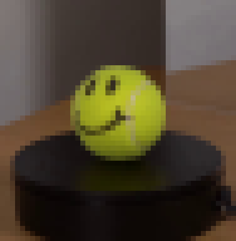
视觉工具实际返回图片 3
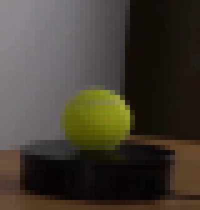
视觉工具实际返回图片 4
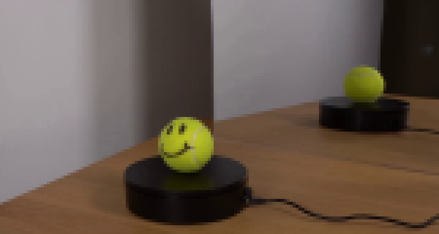
视觉工具实际返回图片 5
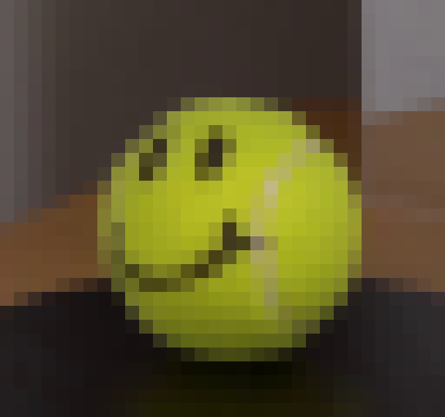
视觉工具实际返回图片 6
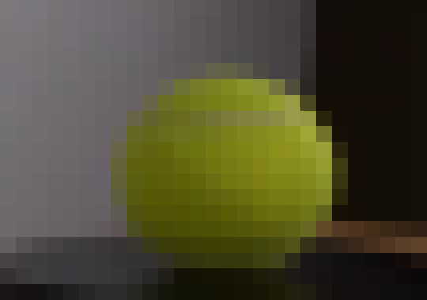
视觉工具实际返回图片 7
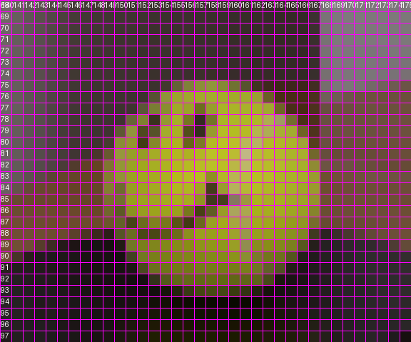
视觉工具实际返回图片 8
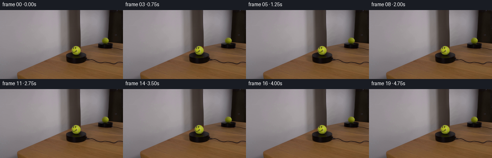
视觉工具实际返回图片 9

视觉工具实际返回图片 10

视觉工具实际返回图片 11
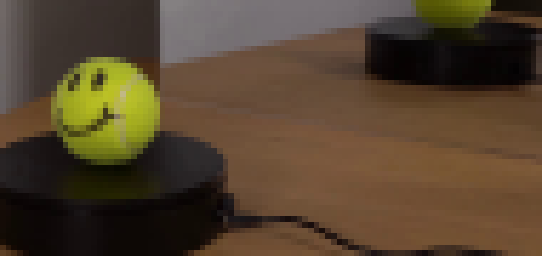
视觉工具实际返回图片 12
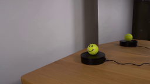
视觉工具实际返回图片 13

视觉工具实际返回图片 14
视觉工具实际返回图片 15

视觉工具实际返回图片 16
视觉工具实际返回图片 17
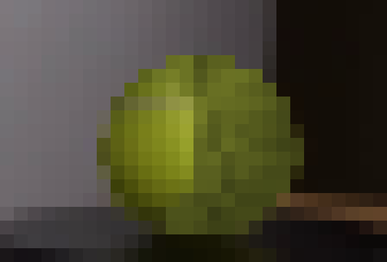
视觉工具实际返回图片 18
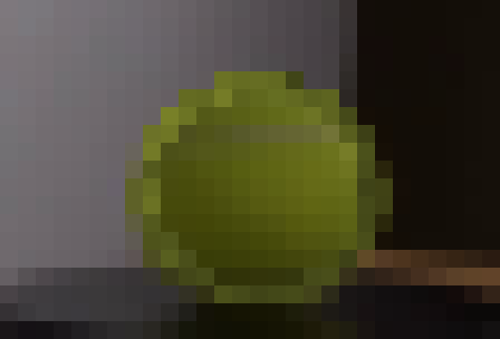
视觉工具实际返回图片 19
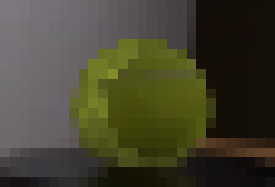
视觉工具实际返回图片 20
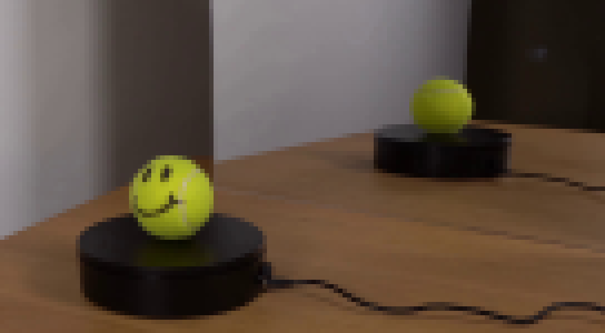
视觉工具实际返回图片 21
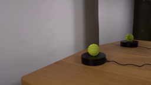
视觉工具实际返回图片 22

视觉工具实际返回图片 23
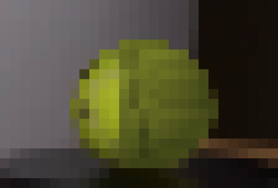
视觉工具实际返回图片 24

视觉工具实际返回图片 25
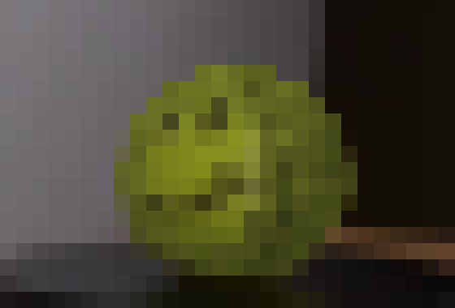
视觉工具实际返回图片 26
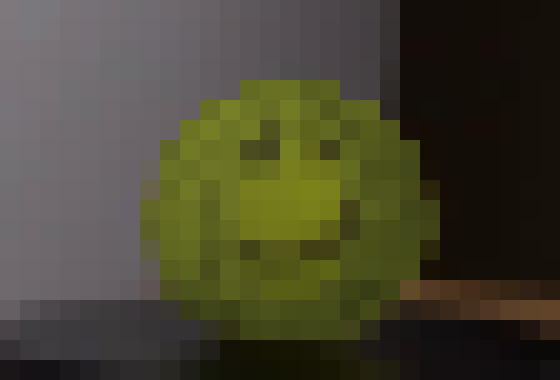
视觉工具实际返回图片 27
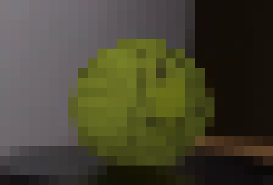
视觉工具实际返回图片 28
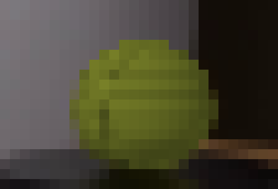
视觉工具实际返回图片 29

视觉工具实际返回图片 30
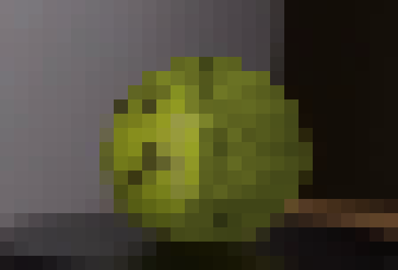
视觉工具实际返回图片 31
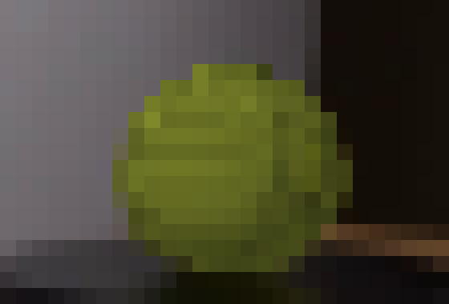
视觉工具实际返回图片 32
视觉工具实际返回图片 33

视觉工具实际返回图片 34

视觉工具实际返回图片 35

视觉工具实际返回图片 36
视觉工具实际返回图片 37
视觉工具实际返回图片 38
视觉工具实际返回图片 39

保存候选 6 份；完成命令 49 次；可验证图片返回 39 张。原始 API 响应与完整日志保留在本地。